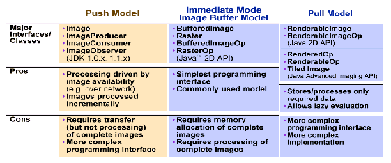

| CONTENTS | PREV | NEXT | Java 2D API |
|
CHAPTER 5 |
Imaging |
The Java 2DTM API supports three imaging models
- The producer/consumer (push) model provided in previous versions of the JDK software.
- The immediate mode model introduced in the JavaTM 2 SDK software release.
- The pipeline (pull) model compatible with the immediate mode model and that will be fully implemented in the forthcoming Java Advanced Imaging API.
The following table contrasts the features of each of these imaging models. This chapter focuses on the objects and techniques of the immediate mode imaging model. The immediate mode imaging classes and interfaces of the Java 2D API provide techniques for dealing with pixel mapped images whose data is stored in memory. This API supports accessing image data in a variety of storage formats and manipulating image data through several types of filtering operations.